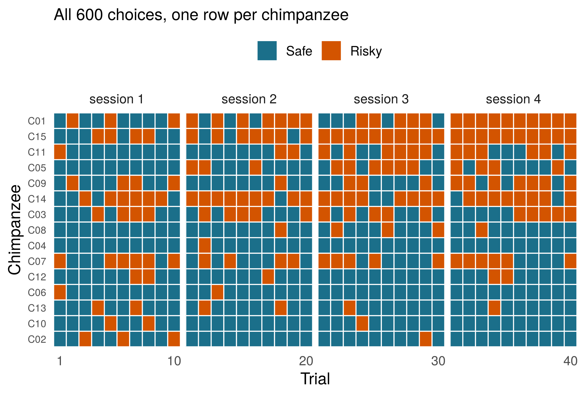
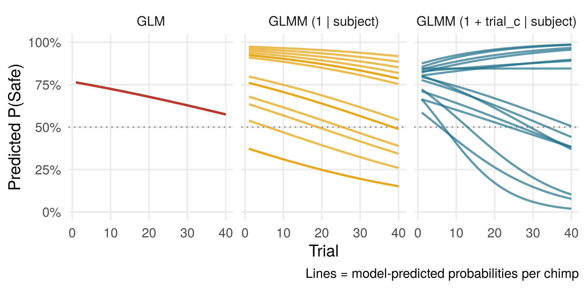
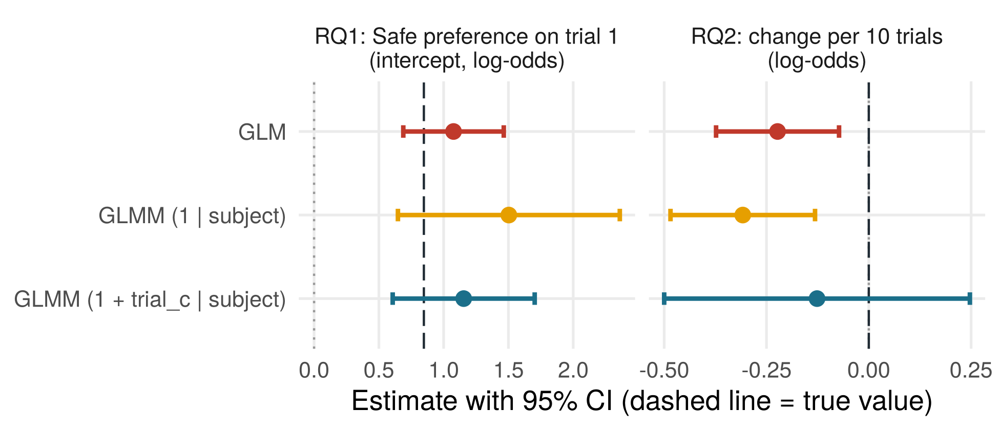
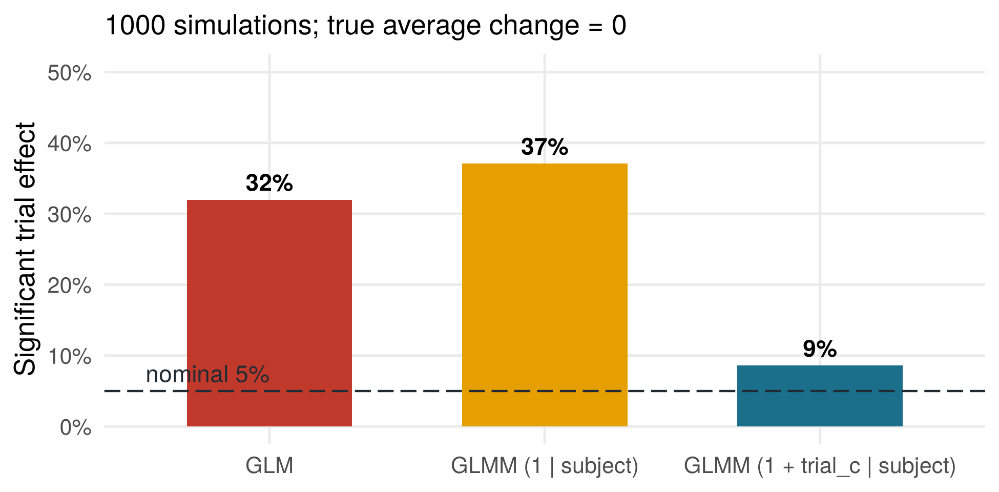

Exercises with solutions: a Poisson GLMM on maternal behaviour in wild Guinea baboons, with the open data of Dal Pesco et al. (2026)
Simulate first: do chimpanzees understand mechanisms?
Chimpanzees choose into which of two boxes a grape is dropped. The Safe box clearly guarantees delivery; in the Risky box, the grape seems to get stuck. In fact, both boxes always deliver.
RQ1: Do chimps prefer the Safe box on trial 1?
RQ2: Does this preference change over trials?
Ongoing study with the MPI EVA, Leipzig; preregistered. The data do not exist yet: these are simulated data of what we expect, so we know the true answer: a clear Safe preference on trial 1 (70%), no average change over trials, but chimps that differ in whether they drift towards Safe or Risky.
Simulation code
TRUE.INT<-qlogis(0.70)# log-odds of choosing Safe on trial 1 (Side = left)TRUE.TRIAL<-0# average change per trial (log-odds)TRUE.SIDE<-0.3# small bias towards the right sideSD.INT<-0.8# between-chimp SD of the interceptSD.SLOPE<-0.05# between-chimp SD of the trial slope (per trial)side_sequence<-function(){# 5 x right, 5 x left; max. 2 in a rowrepeat{s<-sample(rep(0:1, 5))if(max(rle(s)$lengths)<=2)return(s)}}sim_chimps<-function(n=15, b0=TRUE.INT, b.trial=TRUE.TRIAL, b.side=TRUE.SIDE,sd.int=SD.INT, sd.slope=SD.SLOPE){ids<-sprintf("C%02d", 1:n)u0<-setNames(rnorm(n, 0, sd.int), ids); u1<-setNames(rnorm(n, 0, sd.slope), ids)d<-do.call(rbind, lapply(ids, function(id)data.frame(subject =id, session =rep(1:4, each =10), trial =1:40, side_safe =unlist(replicate(4, side_sequence(), simplify =FALSE)))))d$trial_c<-d$trial-1# first-trial centred (as preregistered)eta<-b0+u0[d$subject]+(b.trial+u1[d$subject])*d$trial_c+b.side*d$side_safed$safe<-rbinom(nrow(d), 1, plogis(eta))d}set.seed(120)xdata<-sim_chimps()# 15 chimps x 4 sessions x 10 trials
600 choices, but only 15 chimpanzees
Code
ps<-aggregate(safe~subject+session, xdata, mean)chg<-tapply(ps$safe, ps$subject, function(x)x[4]-x[1])ord<-names(sort(chg))# strongest drift to Risky firstgd<-xdatagd$subject<-factor(gd$subject, levels =rev(ord))gd$choice<-factor(ifelse(gd$safe==1, "Safe", "Risky"), levels =c("Safe", "Risky"))gd$session<-factor(paste("session", gd$session))ggplot(gd, aes(trial, subject, fill =choice))+geom_tile(colour ="white", linewidth =0.4)+facet_grid(~session, scales ="free_x", space ="free_x")+scale_fill_manual(values =c(Safe =col_safe, Risky =col_risk), name =NULL)+scale_x_continuous(breaks =c(1, 10, 20, 30, 40), expand =c(0, 0))+labs(x ="Trial", y ="Chimpanzee", subtitle ="All 600 choices, one row per chimpanzee")+theme(legend.position ="top", panel.grid =element_blank(), panel.spacing =unit(0.3, "lines"), axis.text.y =element_text(size =8))

Chimps differ in their overall preference and in how their preference changes. Choices of the same chimp are more similar to each other than to choices of other chimps: they are not independent. A GLM treats the 600 choices as 600 pieces of information (pseudoreplication).
Three models
glm.mod<-glm(safe~trial_c+side_safe, family =binomial, data =xdata)# random interceptsri.mod<-glmer(safe~trial_c+side_safe+(1|subject), family =binomial, data =xdata, control =glmerControl(optimizer ="bobyqa"))# random intercepts + random slopesrs.mod<-glmer(safe~trial_c+side_safe+(1+trial_c|subject), family =binomial, data =xdata, control =glmerControl(optimizer ="bobyqa"))
Code
nd<-expand.grid(trial_c =0:39, subject =unique(xdata$subject), side_safe =0.5)nd$trial<-nd$trial_c+1labs3<-c("GLM", "GLMM (1 | subject)", "GLMM (1 + trial_c | subject)")ln<-rbind(transform(nd, p =predict(glm.mod, newdata =nd, type ="response"), model =labs3[1]),transform(nd, p =predict(ri.mod, newdata =nd, type ="response"), model =labs3[2]),transform(nd, p =predict(rs.mod, newdata =nd, type ="response"), model =labs3[3]))ln$model<-factor(ln$model, levels =labs3)ggplot(ln, aes(trial, p, group =subject, colour =model))+geom_hline(yintercept =.5, linetype ="dotted", colour ="grey50")+geom_line(alpha =.7, linewidth =.8)+facet_wrap(~model)+scale_colour_manual(values =c(col_glm, col_ri, col_glmm), guide ="none")+scale_y_continuous(limits =c(0, 1), labels =scales::percent)+labs(x ="Trial", y ="Predicted P(Safe)", caption ="Lines = model-predicted probabilities per chimp")

What changes? And what is true?
Code
cg<-summary(glm.mod)$coefficients; cri<-summary(ri.mod)$coefficients; crs<-summary(rs.mod)$coefficientsrq<-c("RQ1: Safe preference on trial 1\n(intercept, log-odds)", "RQ2: change per 10 trials\n(log-odds)")cmp<-data.frame( term =factor(rep(rq, each =3), levels =rq), model =factor(rep(labs3, 2), levels =rev(labs3)), est =c(cg["(Intercept)", 1], cri["(Intercept)", 1], crs["(Intercept)", 1],10*c(cg["trial_c", 1], cri["trial_c", 1], crs["trial_c", 1])), se =c(cg["(Intercept)", 2], cri["(Intercept)", 2], crs["(Intercept)", 2],10*c(cg["trial_c", 2], cri["trial_c", 2], crs["trial_c", 2])))truth<-data.frame(term =factor(rq, levels =rq), val =c(TRUE.INT, 10*TRUE.TRIAL))ggplot(cmp, aes(est, model, colour =model))+geom_vline(xintercept =0, colour ="grey60", linetype ="dotted")+geom_vline(data =truth, aes(xintercept =val), colour =col_true, linetype ="longdash")+geom_errorbarh(aes(xmin =est-1.96*se, xmax =est+1.96*se), height =.15, linewidth =1)+geom_point(size =3)+facet_wrap(~term, scales ="free_x")+scale_colour_manual(values =c("GLM"=col_glm, "GLMM (1 | subject)"=col_ri,"GLMM (1 + trial_c | subject)"=col_glmm), guide ="none")+labs(x ="Estimate with 95% CI (dashed line = true value)", y =NULL)

RQ1: intercept
RQ2: trial
GLM
1.08 (p < .001)
-0.022 (p = .004)
GLMM: intercepts
1.50 (p < .001)
-0.031 (p < .001)
GLMM: + slopes
1.15 (p < .001)
-0.013 (p = .507)
All models find the Safe preference on trial 1. But the GLM and the random-intercept model report a “significant” decline over trials, which does not exist. Only the model with random slopes gets RQ2 right.
Was this just bad luck? 1000 simulations
# Repeat the whole study 1000 times and record the p-value of the trial effect# (fit_chimps() is defined in the R script; takes a few minutes)set.seed(2026)sims<-as.data.frame(t(replicate(1000, suppressMessages(fit_chimps(sim_chimps())))))
Code
sims<-read.csv("../../data/sim_results_chimps_1000.csv")fp<-colMeans(sims<0.05)sv<-data.frame(model =factor(labs3, levels =labs3), val =as.numeric(fp[c("glm.p", "ri.p", "rs.p")]))ggplot(sv, aes(model, val, fill =model))+geom_col(width =.6)+geom_hline(yintercept =.05, linetype ="longdash", colour =col_true)+annotate("text", x =.55, y =.075, label ="nominal 5%", hjust =0, colour =col_true)+geom_text(aes(label =pc(val)), vjust =-.5, fontface ="bold")+scale_fill_manual(values =c(col_glm, col_ri, col_glmm), guide ="none")+scale_y_continuous(labels =scales::percent, limits =c(0, .5))+labs(x =NULL, y ="Significant trial effect", subtitle ="1000 simulations; true average change = 0")

With a true average change of zero, the GLM finds a “significant” change in 32% of the runs, the random-intercept model in 37%, and the model with random slopes in 9%, much closer to the nominal 5%. The small remaining excess comes from the Wald tests that glmer() reports by default, which are slightly too liberal with only 15 individuals; likelihood-ratio tests or a parametric bootstrap do better.
Simulating your expected data lets you check your planned model before you collect a single data point.
Reading
Bolker, B. M., Brooks, M. E., Clark, C. J., Geange, S. W., Poulsen, J. R., Stevens, M. H. H., & White, J.-S. S. (2009). Generalized linear mixed models: A practical guide for ecology and evolution. Trends in Ecology & Evolution, 24(3), 127–135.
Bolker, B. M. (2015). Linear and generalized linear mixed models. In G. A. Fox, S. Negrete-Yankelevich, & V. J. Sosa (Eds.), Ecological statistics: Contemporary theory and application. Oxford University Press.
Schielzeth, H., & Forstmeier, W. (2009). Conclusions beyond support: Overconfident estimates in mixed models. Behavioral Ecology, 20(2), 416–420.
Barr, D. J., Levy, R., Scheepers, C., & Tily, H. J. (2013). Random effects structure for confirmatory hypothesis testing: Keep it maximal. Journal of Memory and Language, 68(3), 255–278.